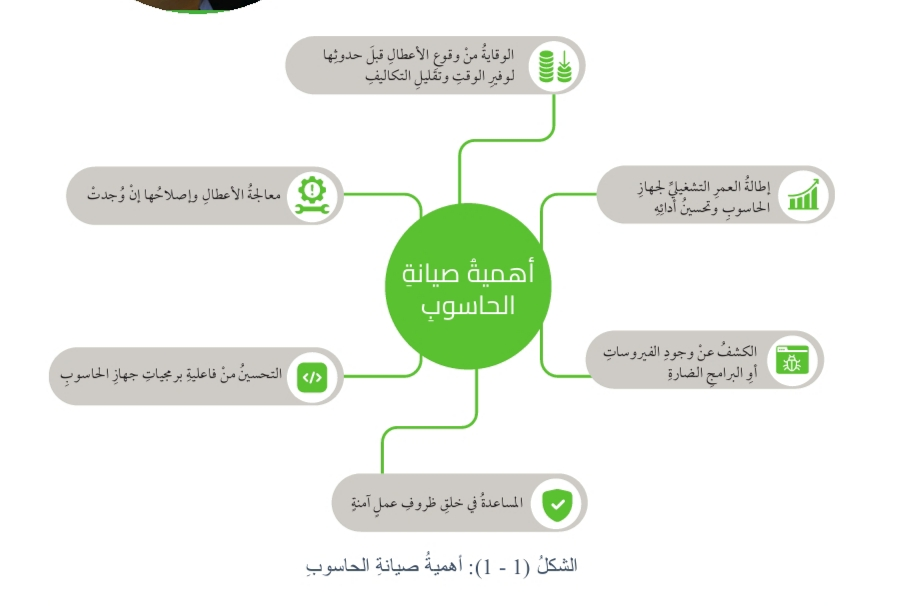

جهاز الحاسوب يتكون من أجزاء داخلية (الهاردوير الداخلي وأجزاء خارجية
وحدات الإدخال والإخراج)، وكل جزء يقوم بوظيفة معينة، لكن التكامل بينها
هو الذي يجعل الحاسوب يعمل كنظام واحد متكامل.
الأجزاء الداخلية (Internal Components)
وحدة المعالجة المركزية (CPU): العقل المدبر الذي ينفذ التعليمات.
الذاكرة (RAM): تخزن البيانات والتعليمات بشكل مؤقت أثناء العمل.
وحدات التخزين Hard Disk / SSD: تخزن البيانات والبرامج بشكل دائم.
لوحة الأم (Motherboard): تربط جميع المكونات الداخلية مع بعضها.
بطاقة الرسوميات / الصوت: تعالج البيانات المرئية أو الصوتية لإخراجها.
الأجزاء الخارجية (External Components)
وحدات الإدخال (Input) مثل لوحة المفاتيح والفأرة والماسح الضوئي، لإدخال البيانات والأوامر.
وحدات الإخراج (Output) مثل الشاشة والطابعة والسماعات، لإظهار النتائج للمستخدم.
أجهزة تخزين خارجية مثل الفلاش ميموري والأقراص الصلبة الخارجية لنقل البيانات.
أجهزة اتصال مثل المودم أو كرت الشبكة للتواصل عبر الإنترنت.
التكامل الوظيفي بين الأجزاء الداخلية والخارجية
إدخال البيانات: يقوم المستخدم بإدخال أوامر وبيانات عبر الأجزاء الخارجية، مثل لوحة المفاتيح أو الماسح الضوئي.
المعالجة: تُرسل البيانات إلى الأجزاء الداخلية (CPU) و(RAM) لمعالجتها وفقًا للبرامج المخزنة.
التخزين: بعد المعالجة، قد تُخزن البيانات في وحدات التخزين الداخلية (SSD/HDD) أو في وسائل تخزين خارجية (USB).
الإخراج: تُرسل النتائج النهائية إلى الأجزاء الخارجية، مثل الشاشة لعرضها أو الطابعة لإخراجها ورقيًا.
التواصل المستمر: الأجزاء الداخلية لا تستطيع العمل دون أوامر وبيانات تأتي من الأجزاء الخارجية، والأجزاء الخارجية بلا قيمة إذا لم يكن هناك معالجة داخلية تُحوّل المدخلات إلى مخرجات مفهومة.
مثال عملي
عند كتابة نص على لوحة المفاتيح (جزء خارجي - إدخال)، يتم تحويل الأحرف
إلى إشارات رقمية ومعالجتها داخل الـ CPU (جزء داخلي)، ويتم حفظها مؤقتًا
في RAM أو بشكل دائم في القرص الصلب (أجزاء داخلية)، وأخيرًا تظهر
الكلمات على الشاشة (جزء خارجي - إخراج).
مفهوم الصيانة
وضح المقصود بالصيانة
يشير مفهوم الصيانة عمومًا إلى مجموعة الأنشطة والإجراءات الوقائية أو
التصحيحية التي تهدف إلى الحفاظ على أداء الأجهزة، لضمان استمراريتها في
العمل بكفاءة، وتقليل احتمالات الأعطال أو التلف.
وضح الهدف من الصيانة
الحفاظ على أداء الأجهزة، لضمان استمراريتها في العمل بكفاءة وتقليل
احتمالات الأعطال أو التلف.
على ماذا تشمل الصيانة؟
تشمل الصيانة فحص الأجزاء الداخلية والخارجية، وإصلاح الأعطال، واستبدال
المكونات التالفة عند الحاجة.
وضح المقصود بصيانة الحاسوب (Computer Maintenance)
صيانة الحاسوب فتُعرف بأنها الإجراءات والأنشطة التي تحافظ على ديمومة عمل
جهاز الحاسوب وتضمن عمله بكفاءة عالية وبأقل التكاليف، وتتضمن تشخيص
الأعطال ومحاولة إصلاحها.
على ماذا تتضمن صيانة الحاسوب؟
تتضمن تشخيص الأعطال ومحاولة إصلاحها.
علل: تعد صيانة جهاز الحاسوب أمرًا مهمًا
للاحتفاظ بأداء الحاسوب على أفضل مستوى.

أهمية صيانة الأجهزة
أهمية صيانة الأجهزة بشكل عام
إطالة العمر الافتراضي للجهاز: الصيانة الدورية تمنع الأعطال المبكرة وتحافظ على عمل الأجهزة بكفاءة أطول.
الحفاظ على الأداء: الأجهزة التي تتم صيانتها تعمل بشكل أسرع وأكثر استقرارًا مقارنة بالأجهزة المهملة.
تقليل التكاليف: الإصلاح الوقائي أرخص بكثير من إصلاح الأعطال الكبيرة أو استبدال الجهاز.
الأمان والسلامة: الأجهزة المهملة قد تسبب مشاكل كهربائية أو حرائق أو أعطالًا مفاجئة.
الموثوقية: تضمن أن الجهاز سيكون متاحًا عند الحاجة دون توقفات غير متوقعة.
أهمية صيانة الحاسوب بشكل خاص
الحفاظ على سرعة وكفاءة الأداء: تنظيف الملفات غير الضرورية (Junk, Cache)، وتحديث نظام التشغيل والبرامج لحماية الأداء من البطء.
حماية البيانات: الصيانة تشمل نسخًا احتياطية للملفات المهمة لتجنب ضياعها عند حدوث أعطال.
الحماية من الفيروسات والاختراقات: تحديث برامج الحماية Antivirus, Firewall يقلل المخاطر الأمنية.
منع ارتفاع الحرارة: تنظيف المراوح والمشتتات الحرارية يحافظ على استقرار القطع الداخلية ويمنع تلفها.
إطالة عمر المكونات الداخلية: مثل القرص الصلب والرام والمعالج، عبر متابعة حالتها واستبدال التالف مبكرًا.
توفير المال: صيانة دورية بسيطة (تنظيف، تحديث، فحص) تمنع أعطالًا مكلفة مثل احتراق اللوحة الأم أو فقدان البيانات.
أنواع صيانة الحاسوب
بناء على ماذا تُصنّف أنواع صيانة الحاسوب؟
وفقًا للفترة الزمنية التي تطبق فيها إجراءات الصيانة؛ فمنها ما يطبق قبل
تعطل الجهاز، ومنها ما يستمر طوال فترة استخدامنا لجهاز الحاسوب، ومنها
ما نلجأ إليه بعد أن يتعطل الجهاز.
الصيانة الوقائية (Preventive Maintenance).
الصيانة التنبؤية (Predictive Maintenance).
الصيانة التكيفية (Adaptive Maintenance).
الصيانة العلاجية (Therapeutic Maintenance).
أولًا: الصيانة الوقائية (Preventive Maintenance)
عرف المقصود بالصيانة الوقائية
تُعرَف الصيانة الوقائية بأنها مجموعة من الإجراءات الدورية للعناية بجهاز
الحاسوب، وتنفَّذ وفق خطة زمنية محددة.
الهدف من الصيانة الوقائية
الحفاظ على الجهاز في ظروف جيدة ووقايته من الأعطال قبل وقوعها؛ مما يوفر
الوقت والجهد والمال الذي يُدفع في عملية إصلاح الأعطال ومعالجتها، ويسهم
في إطالة العمر التشغيلي للحاسوب وملحقاته.
من الإجراءات التي تنفّذ بشكل دوري في الصيانة الوقائية:
إجراءات وقائية للمحافظة على المكونات المادية لجهاز الحاسوب.
إجراءات وقائية للمحافظة على المكونات البرمجية لجهاز الحاسوب.
إثراء
أبحث في المواقع الإلكترونية الموثوقة على شبكة الإنترنت عن اختبارات
الفحص الذاتي (POST): ما هي؟ وما أهميتها؟ وكيف تعمل؟ وكيف تتعامل مع
الأعطال؟ وما هي الأخطاء الشائعة في أثناء (POST)، وكيف يتعامل مع تلك
الأخطاء؟
أكتب ملخصًا شاملًا لما توصلت إليه باستخدام مستندات جوجل مع التركيز
على النقاط المهمة، وأشاركه مع الزملاء لنتوصل لاحقًا لملخص مشترك.
أستخدم خاصية المشاركة في Google Docs لدعوة الزملاء للاطلاع على
المستند، وأمنحهم صلاحية التعديل أو التعليق للتوصل إلى ملخص مشترك.
إضاءة
الأماكن التي لا نستطيع تنظيفها بوساطة منفاخ الهواء يجب تنظيفها بوساطة
قطعة قطن جافة أو باستخدام أدوات مخصصة لتنظيف الشقوق أو نفض الغبار.
تُستخدم مادة التنظيف (Foam Cleaner) من أجل التنظيف العميق للأجزاء
البلاستيكية والشاشات والماسحات الضوئية ولوحات المفاتيح وغيرها من
المعدات، وهو منظف رغوي مقاوم للكهرباء.
الإجراءات الوقائية للمحافظة على المكونات البرمجية
على ماذا تشمل الإجراءات الوقائية للمحافظة على المكونات البرمجية لجهاز الحاسوب؟
تحديث نظام التشغيل والبرامج والتطبيقات وخاصةً برنامج مكافحة الفيروسات باستمرار.
إصلاح الأعطال باستخدام أدوات نظام التشغيل.
حذف الملفات المؤقتة وإزالة البرامج غير الضرورية.
عمل نسخ احتياطية للملفات.
اذكر أهمية تحديث نظام التشغيل والبرامج والتطبيقات وخاصة برنامج مكافحة الفيروسات باستمرار.
تساعد عملية التحديث في إضافة تحسينات ومزايا جديدة على نظام التشغيل
والبرمجيات، ثم إنها تعمل على علاج الثغرات الأمنية التي يمكن أن تنفذ
منها الفيروسات والبرامج الضارة إلى جهاز الحاسوب.
كيف يتم إصلاح الأعطال في الإجراءات الوقائية للمحافظة على المكونات البرمجية لجهاز الحاسوب؟
باستخدام أدوات نظام التشغيل، وهي برامج مرفقة مع نظام التشغيل Windows.
اعط أمثلة على أدوات نظام التشغيل تستخدم في إصلاح الأعطال
أداة إلغاء التجزئة/تحسين محركات الأقراص (Drives Defragment and Optimize).
أداة تنظيف القرص (Disk Cleanup).
أداة تشخيص الذاكرة (Windows Memory Diagnostic).
اذكر أهمية حذف الملفات المؤقتة وإزالة البرامج غير الضرورية
يساعد هذا الإجراء على التخلص من تراكم التطبيقات غير المستخدمة التي
تشغل مساحة تخزينية في القرص الصلب، ويمكن أن تؤدي إلى إبطاء عمله.
علل: يجب عمل نسخ احتياطية للملفات
لتجنب فقدانها نتيجة مشكلات برمجية أو تلف القرص الصلب.
العناية بالحاسوب المحمول
العناية بالحاسوب المحمول تشمل:
الحفاظ على المكونات الفيزيائية: التنظيف والحماية من الصدمات.
الحفاظ على البطارية: الشحن الصحيح وحرارة مناسبة.
الحفاظ على النظام: التحديث والحماية والنسخ الاحتياطية.
الحفاظ على بيئة التشغيل: التهوية وإبعاده عن الغبار والسوائل.
ثانيًا: الصيانة التنبؤية (Predictive Maintenance)
وضح المقصود بالصيانة التنبؤية
هي شكل متقدم من الصيانة الوقائية، تستخدم علم البيانات والتحليلات
التنبؤية لتقدير الوقت الذي قد تتوقف فيه إحدى المعدات أو أحد البرامج
عن العمل، بحيث يمكن جدولة صيانة إصلاحية قبل التوقف التام عن العمل.
الهدف من الصيانة التنبؤية
تقليل وقت توقف الجهاز عن العمل.
حماية البيانات من التلف أو الفقدان.
إطالة عمر المكونات الداخلية.
تحسين أداء الحاسوب بشكل مستمر؛ مما يؤدي لزيادة عمر المعدات أو البرامج إلى أقصى حد قبل الوصول إلى مرحلة التلف الكلي.
في الصيانة التنبؤية نراقب هذه المؤشرات للتنبؤ بالمشاكل (بطء، أعطال،
فيروسات) قبل حدوثها، وبالتالي نحافظ على استقرار الجهاز.
ثالثًا: الصيانة التكيفية (Adaptive Maintenance)
وضح المقصود بالصيانة التكيفية
هي إجراءات تُستخدم لتكييف مكونات الحاسوب المادية والبرمجية مع أي
تغييرات يمكن أن تطرأ في البيئة المحيطة بها، مثل تحديث تطبيق معين
ليتوافق مع النسخة الجديدة لنظام التشغيل، أو توسيع قدرات التخزين
بإضافة أقراص تخزين جديدة، أو استبدال أقراص ذات سعة أكبر بالأقراص
القديمة، أو تغيير قطع الحاسوب لتلبية المتطلبات الجديدة.
أمثلة على الصيانة التكيفية
تحديث تطبيق معين ليتوافق مع النسخة الجديدة لنظام التشغيل.
توسيع قدرات التخزين بإضافة أقراص تخزين جديدة.
استبدال أقراص ذات سعة أكبر بالأقراص القديمة.
تغيير قطع الحاسوب لتلبية المتطلبات الجديدة.
الهدف من الصيانة التكيفية
تهدف الصيانة التكيفية إلى ضمان تلاؤم المكونات المادية والبرمجية لجهاز
الحاسوب مع المتطلبات التكنولوجية لتلبية الاحتياجات الحديثة.
نشاط – دراسة حالة
أقرأ السيناريو الآتي وأحلله:
تستخدم شركة صغيرة حواسيب مكتبية قديمة لإدارة أعمالها اليومية، مثل
إعداد التقارير وإرسال البريد الإلكتروني، واستخدام التطبيقات المكتبية
Microsoft Office. ومع توسع الشركة، ظهرت بعض المشكلات مثل: بطء
الحواسيب في أثناء فتح ملفات كبيرة أو استخدام تطبيقات متعددة، وتوقف
النظام عن الاستجابة عند تشغيل برامج التصميم أو المعالجة المتقدمة،
وامتلاء الأقراص الصلبة بشكل متكرر؛ مما يعيق تخزين بيانات العملاء
الجديدة، بالإضافة إلى تعرض الحواسيب لمحاولات اختراق بسبب عدم تحديث
برامج الحماية.
ثم أتعاون مع زملائي في المجموعة على ما يأتي:
توضيح أثر المشكلات الرئيسة التي تواجهها الشركة في كفاءة العمل ورضا العملاء.
تحديد الإجراءات التكيفية المناسبة لتحسين أداء الحواسيب، وتنظيمها في جدول كما يأتي:
اقتراح خطة لتنفيذ الإجراءات التكيفية وفق أولويات، بما يضمن تقليل تأثيرها في عمل الشركة اليومي.
إعداد تقرير ومشاركته مع المجموعات الأخرى، وتبادل الأفكار والتغذية الراجعة.
أولًا: أثر المشكلات الرئيسة على كفاءة العمل ورضا العملاء
بطء الحواسيب عند فتح ملفات كبيرة أو استخدام تطبيقات متعددة:
يقلل الإنتاجية ويؤخر إنجاز المهام.
توقف النظام عن الاستجابة عند تشغيل برامج متقدمة:
يؤدي إلى تعطل العمل وفقدان الوقت، وبالتالي انخفاض جودة الخدمة.
امتلاء الأقراص الصلبة بشكل متكرر:
يعيق تخزين بيانات العملاء الجديدة ويعرّض البيانات القديمة للحذف أو الضياع.
التعرض لمحاولات اختراق بسبب عدم تحديث برامج الحماية:
يهدد أمان بيانات العملاء وسرية الشركة، ويقلل ثقة العملاء.
ثانيًا: جدول الإجراءات التكيفية
المشكلة
الإجراء التكيفي المقترح
الفائدة المتوقعة
بطء الحواسيب عند فتح الملفات
ترقية الذاكرة العشوائية (RAM) والمعالجات
تسريع الأداء وزيادة كفاءة تنفيذ المهام
توقف النظام عند تشغيل برامج متقدمة
استخدام أجهزة حديثة أو كروت شاشة أقوى
القدرة على تشغيل البرامج دون تعطل
امتلاء الأقراص الصلبة
إضافة أقراص صلبة أكبر أو وحدات SSD وتنظيم البيانات
توفير مساحة للتخزين وسرعة الوصول للبيانات
التعرض للاختراق
تثبيت وتحديث برامج الحماية والجدران النارية
حماية البيانات وزيادة الثقة لدى العملاء
ثالثًا: خطة تنفيذ الإجراءات وفق الأولويات
أولوية عالية (عاجلة):
تحديث برامج الحماية لمنع الاختراقات.
إضافة وحدات تخزين جديدة لحماية بيانات العملاء.
أولوية متوسطة:
ترقية الذاكرة RAM والمعالجات لمعالجة البطء.
أولوية لاحقة على المدى المتوسط:
الاستثمار في أجهزة جديدة أو تحديث كروت الشاشة لتشغيل برامج التصميم المتقدمة.
رابعًا: التقرير (ملخص قابل للمشاركة)
تواجه الشركة ضعفًا في الأداء بسبب بطء الأجهزة وتكرار توقفها عن العمل.
هناك خطورة على بيانات العملاء نتيجة امتلاء الأقراص وغياب الحماية
المحدثة. تم اقتراح حلول عملية (ترقية الأجهزة، إضافة تخزين، تحديث
الحماية). تم ترتيب الأولويات بحيث تبدأ الشركة بحماية البيانات وتوفير
التخزين، ثم تحسين الأداء، وأخيرًا التوسع في شراء أجهزة جديدة.
هي صيانة الأعطال عند حدوثها فعليًا، وذلك عن طريق تحديد العطل، ونوعه
ومكانه، ومعرفة أسبابه، ثم إصلاح العطل أو تبديل التالف إذا لزم؛ بهدف
استعادة النظام حالته التشغيلية الطبيعية.
تكمن أهمية الصيانة العلاجية بما يأتي:
ضمان استمرارية العمل.
الحفاظ على الأجهزة.
تحسين الأداء.
تقليل التكلفة المستقبلية.
تعزيز الأمان.
من أهمية الصيانة العلاجية ضمان استمرارية العمل، وضح ذلك:
إن الإسراع في إصلاح الأعطال يضمن تقليل وقت التوقف عن العمل، خاصةً في
البيئات الحساسة مثل الشركات أو المؤسسات التعليمية.
من أهمية الصيانة العلاجية الحفاظ على الأجهزة، وضح ذلك:
معالجة الأعطال في مراحلها الأولية يمنع تفاقم المشكلات؛ مما يطيل عمر الجهاز.
من أهمية الصيانة العلاجية تحسين الأداء، وضح ذلك:
إصلاح المشكلات المتعلقة بالأداء (مثل بطء النظام أو الأعطال البرمجية)
يعيد الجهاز للعمل بأقصى كفاءة ممكنة.
من أهمية الصيانة العلاجية تقليل التكلفة المستقبلية، وضح ذلك:
معالجة الأعطال فور ظهورها توفر تكاليف كبيرة قد تنجم عن الحاجة إلى
استبدال الأجهزة أو إصلاح أعطال أكبر.
من أهمية الصيانة العلاجية تعزيز الأمان، وضح ذلك:
إصلاح الأعطال المتعلقة بالبرمجيات أو الثغرات الأمنية يقلل من خطر
التعرض للاختراق أو فقدان البيانات.
لضمان القيام بالصيانة العلاجية بالطريقة المثلى، يجب اتباع مجموعة من
الخطوات كما هو موضح:
نشاط
الحاسوب أصبح بطيئًا جدًا وبعد الفحص تبين وجود أعطال في محرك الأقراص الصلبة.
التحليل: العطل حدث بالفعل ويحتاج لإصلاح.
النوع: صيانة علاجية.
تمت جدولة فحص دوري لمكونات الحاسوب وتنظيفه من الغبار لضمان استمرار عمله بكفاءة.
التحليل: الهدف منع الأعطال قبل حدوثها.
النوع: صيانة وقائية.
ارتفاع غير طبيعي في درجة حرارة المعالج يشير إلى احتمالية حدوث مشكلة في المروحة قريبًا.
التحليل: لم يحدث العطل بعد، لكن توجد مؤشرات تحذيرية لاتخاذ إجراء مبكر.
النوع: صيانة تنبؤية.
تحديث برنامج مضاد الفيروسات وتثبيت آخر الإصدارات لحماية الأجهزة من البرمجيات الضارة.
التحليل: تعديل النظام لمواكبة التغييرات وحماية الأداء.
النوع: صيانة تكيفية.
بعد ظهور رسالة خطأ على الشاشة الزرقاء قام الفريق الفني بإعادة تثبيت نظام التشغيل وإصلاح الملفات التالفة.
التحليل: إصلاح عطل حدث بالفعل.
النوع: صيانة علاجية.
إرشادات السلامة عند التعامل مع مكونات الحاسوب
اذكر أهمية استخدام أساور تفريغ الشحنات (Wrist Straps Electrostatic Discharge)
لتفريغ الشحنة الكهربائية الموجودة في الجسم.
علل: يجب الحذر عند فك مكونات الحاسوب وتركيبها
للحفاظ عليها من الكسر أو التلف باستخدام أدوات فك وتركيب عالية الجودة.
علل: يجب عدم لمس الدوائر الإلكترونية داخل الجهاز
كي لا تصاب هذه الدوائر بالتلف، وذلك بسبب تفريغ الشحنات الساكنة.